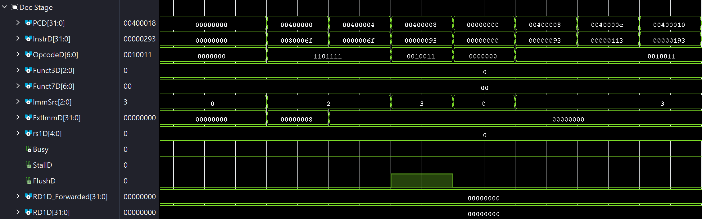

Welcome to the Mach-V Documentation!
Microarchitecture
Microarchitecture¶
Performance Benchmark¶
Here is the performance scaling of the Mach-V core running the CoreMark benchmark.


Microarchitecture Overview¶
The microarchitecture of Mach-V has currently evolved through two distinct iterations:

Mach-V Microarchitecture - Version 1
Mach-V Version 1 serves as the baseline implementation, featuring a classic RISC-V scalar architecture:
- Classic 5-Stage Pipeline: Implements the standard Fetch, Decode, Execute, Memory, and Writeback stages for balanced throughput.
- Comprehensive Hazard Management: Dedicated hardware for data forwarding and hazard detection resolves data and control hazards automatically.
- Scalar In-Order Execution: Issues, executes, and commits instructions sequentially (single-issue) to ensure deterministic behavior and architectural simplicity.

Mach-V Microarchitecture - Version 2
Mach-V Version 2 focuses on timing optimization and hardware acceleration, introducing the following enhancements:
- Enhanced Clock Frequency: Integrated Clock Wizard boosts the operating frequency to 115 MHz (surpassing the 100 MHz baseline).
- Critical Path Optimization: PC logic is relocated from the Execute (EXE) stage to the Memory (MEM) stage to relax timing constraints.
- Hardware-Accelerated Arithmetic: Replaces native design with optimized AMD/Xilinx IP cores for high-performance integer multiplication and division.
Clock Architecture¶
Consistent with the synchronous design conventions established in NUS CG3207, the Mach-V processor operates within a single clock domain. All registers and sequential logic are driven by a single global clock signal to simplify timing analysis.
Clock Frequency Scaling¶
The default clock is only 100MHz maximum. To improve the performance of Mach-V, I utilize the AMD Clocking Wizard IP core to synthesize a higher frequency clock from this base input.
Generate the IP Core¶
To use the IP in Vivado, click the "IP Catalog" on the left flow navigator. Then, search for "clocking wizard". Click the only option available. And then configure the IP to use the following settings:
- In the "Clocking Options" tab:
- Make sure the primary input clock is
clk_in1with a frequency of100 MHz. - Make sure the primary input clock source is "Single ended clock capable pin".
- Make sure the primary input clock is
- In the "Output Clocks" tab:
- Click the
clk_out1and set the frequency that you want to achieve. - Make sure the "Reset Type" is set to "Active High".
- Make sure the "locked" option is enabled under the "Enable Optional Inputs".
- Click the
Use the IP Core¶
The clock generation logic must be instantiated in the top-level entity (TOP_Nexys.vhd).
Component Declaration¶
Add the component declaration before the architecture begin keyword:
----------------------------------------------------------------------------
-- Component: Clocking Wizard
----------------------------------------------------------------------------
component clk_wiz_0
port (
-- Clock in ports
clk_in1 : in std_logic;
-- Clock out ports
clk_out1 : out std_logic;
-- Status and control signals
reset : in std_logic;
locked : out std_logic
);
end component;
----------------------------------------------------------------------------
-- Signals: Clock & Reset Management
----------------------------------------------------------------------------
signal clk_sys : std_logic; -- The synthesized high-speed system clock
signal clk_locked : std_logic; -- High ('1') when the clock is stable
signal sys_reset : std_logic; -- Combined effective system reset
Instantiation¶
Instantiate the IP core within the architecture body, mapping the board's raw clock to the input:
----------------------------------------------------------------
-- Instance: Clocking Wizard
----------------------------------------------------------------
clk_wiz_inst : clk_wiz_0
port map (
clk_in1 => CLK_undiv, -- Raw 100MHz from physical board pin
clk_out1 => clk_sys, -- Synthesized Fast Clock
reset => RESET, -- Raw button reset (Active High)
locked => clk_locked -- Status signal
);
System Reset Logic¶
It is critical to hold the processor in reset until the clock signal is stable. The locked signal from the Clocking Wizard indicates when the output frequency is stable.
I generate a RESET_EFF (Effective Reset) signal that is asserted (High) if either:
- The physical reset button is pressed (
RESET_INT/RESET_EXT). - The clock is not yet locked (not
clk_locked).
-- Original Logic (Raw Button only)
-- RESET_EFF <= RESET_INT or RESET_EXT;
-- New Logic (Button + Clock Stability Guard)
RESET_EFF <= RESET_INT or RESET_EXT or (not clk_locked);
Frequency Constant Update¶
Finally, ensure the software-visible frequency constant matches the new hardware configuration. This is often used for UART baud rate calculations or timer peripherals.
-- Update this value to match the Clocking Wizard output
constant CLOCK_FREQUENCY : positive := 115000000;
Warning
The CLOCK_FREQUENCY constant is not automatically linked to the IP Core settings. If you reconfigure the Clocking Wizard to a different frequency (e.g., changing from 120MHz to 150MHz), you must manually update the CLOCK_FREQUENCY constant in TOP_Nexys.vhd to ensure correct timing for peripherals like UART.
PC Logic¶
This section details the implementation of the Program Counter (PC) logic, covering PC_Logic.v, ProgramCounter.v, and the relevant multiplexing logic for the PC adder within RV.v.
Moving PC Logic to the Mem Stage¶
In Mach-V Version 2, the PC logic was relocated from the Execute (Exe) stage to the Memory (Mem) stage. This architectural change implies that branch and jump instructions are now committed in the Mem stage. This optimization significantly improved timing performance, allowing Mach-V to achieve a clock frequency of 115 MHz (utilizing the Clocking Wizard IP).
To support this transition, the input logic for the PC Adder was redesigned as follows:
PC_BaseSelection: The base address multiplexer now accepts three new inputs:PCF: For sequential execution (Branch Not Taken).PCM: For conditional branches (Branch Taken).RD1M: For jump instructions. Note thatRD1Mis derived fromRD1E_Forwardedand latched into the Mem stage pipeline register.
PC_OffsetSelection: The offset multiplexer now selects between4(sequential) orExtImmM(branch/jump targets).
Following the PC adder updates, the PC_Logic module itself was simplified. The control signals PCSE and ALUFlagsE are propagated through the pipeline registers to become PCSM and ALUFlagsM. These are then fed into the PC Logic unit in the Mem stage, generating the final branch decision signal, PCSrcM.
Info
The updated microarchitecture diagram illustrating the move of PC Logic to the Mem stage can be found in Mach-V Version 2's microarchitecture diagram.
Warning
Simply delaying the control signals is insufficient for this architectural change. The Hazard Unit must also be updated to handle the new branch resolution timing correctly.
Arithmetic & Logic Unit (ALU)¶
The Mach-V ALU is a streamlined execution unit derived from the reference design used in NUS CG3207. It implements standard RISC-V integer arithmetic and logical operations, utilizing a barrel shifter designed by NUS CG3207 teaching team for efficient single-cycle shift operations.
Zero Flag Optimization¶
While the base architecture is inherited, a critical timing optimization was introduced to the Zero (Z) flag generation. In the reference design, the Z flag is typically derived from the final ALUResult (after the result multiplexer). This creates a long logic chain: Adder -> Result Mux -> Zero Check.
To reduce the critical path, Mach-V computes the Z flag directly from the 33-bit adder output (Sum) in parallel with the result multiplexer. This decouples the flag generation from the multiplexing logic, significantly reducing propagation delay.
// Critical Path Optimization:
// Calculate Zero flag from the intermediate Sum rather than the final ALUResult
assign Z = (Sum[31:0] == 32'b0);
Timing Closure
This optimization is mandatory for Mach-V to achieve timing closure at 115 MHz. Reverting to the standard post-mux Zero generation will cause setup time violations on the Vivado tool.
Multiply & Divide Unit¶
In this version of the Mach-V processor, the multiply and divide unit is incorporated into one file called MCycle.v. The whole idea of the MCycle module is that, while it is doing the computation, the Busy signal (output) will be triggered high and this signal will be used to stall the other relevant pipeline registers so that no new instructions are fetched until the multiplication/division is complete.
This module is implemented using the mealy state machine.
State Machine Control¶
Implementation Details¶
I have tried two implementations for the MCycle module:
-
Native Design
Implement the multiply and divide unit by "hand-typped" Verilog code.
-
Using IP Cores
Use Xilinx IP cores to implement the multiply and divide unit.
Native Design¶
This is a follow-up from CG3207 Assignment 3. More specifically, it is my try to finish the first bullet point in the Task 3 of this assignment.
Multiply Unit¶
For the multiply unit, the idea is to "unroll" the loop. For the 32-bit multiplication, instead of using 32 cycles to compute the result by shifting 1 bit a time, I generate the partial products for every 8 bits of the multiplier in parallel. So, the temporal product here will be \(32+8=40\) bits wide.
module Multiplier32x8 (
input [31:0] A, // The 32-bit full operand
input [ 7:0] B, // The 8-bit slice
output [39:0] Product // Result (32 + 8 = 40 bits max)
);
// // Generate Partial Products (Shift A based on bit position of B)
wire [39:0] pp0 = B[0] ? {8'b0, A} : 40'b0;
wire [39:0] pp1 = B[1] ? {7'b0, A, 1'b0} : 40'b0;
wire [39:0] pp2 = B[2] ? {6'b0, A, 2'b0} : 40'b0;
wire [39:0] pp3 = B[3] ? {5'b0, A, 3'b0} : 40'b0;
wire [39:0] pp4 = B[4] ? {4'b0, A, 4'b0} : 40'b0;
wire [39:0] pp5 = B[5] ? {3'b0, A, 5'b0} : 40'b0;
wire [39:0] pp6 = B[6] ? {2'b0, A, 6'b0} : 40'b0;
wire [39:0] pp7 = B[7] ? {1'b0, A, 7'b0} : 40'b0;
// Sum them up (Tree adder is faster, but this simple chain works also)
assign Product = pp0 + pp1 + pp2 + pp3 + pp4 + pp5 + pp6 + pp7;
endmodule
In this module, the input A is the full 32-bit multiplicand, while B is an 8-bit slice of the multiplier. The output Product is the 40-bit partial product. For the sliced version of the multiplier, it can be implemented as follows in the state machine control:
case (count[1:0])
2'b00: current_byte_op2 = abs_op2[7:0];
2'b01: current_byte_op2 = abs_op2[15:8];
2'b10: current_byte_op2 = abs_op2[23:16];
2'b11: current_byte_op2 = abs_op2[31:24];
endcase
The final product is then obtained by summing up the 4 partial products with appropriate shifts, which can be implemented as follows:
case (count)
1: mult_acc = mult_acc + partial_product_out;
2: mult_acc = mult_acc + (partial_product_out << 8);
3: mult_acc = mult_acc + (partial_product_out << 16);
4: mult_acc = mult_acc + (partial_product_out << 24);
endcase
And lastly, this module is instantiated in the MCycle module as follows:
Tip
This technique can indeed be implementated using for loop in Verilog as follows:
module Multiplier32x8 (
input [31:0] A, // The 32-bit full operand
input [ 7:0] B, // The 8-bit slice
output [39:0] Product // Result (32 + 8 = 40 bits max)
);
// // Generate Partial Products (Shift A based on bit position of B)
wire [39:0] pp0 = B[0] ? {8'b0, A} : 40'b0;
wire [39:0] pp1 = B[1] ? {7'b0, A, 1'b0} : 40'b0;
wire [39:0] pp2 = B[2] ? {6'b0, A, 2'b0} : 40'b0;
wire [39:0] pp3 = B[3] ? {5'b0, A, 3'b0} : 40'b0;
wire [39:0] pp4 = B[4] ? {4'b0, A, 4'b0} : 40'b0;
wire [39:0] pp5 = B[5] ? {3'b0, A, 5'b0} : 40'b0;
wire [39:0] pp6 = B[6] ? {2'b0, A, 6'b0} : 40'b0;
wire [39:0] pp7 = B[7] ? {1'b0, A, 7'b0} : 40'b0;
// Sum them up (Tree adder is faster, but this simple chain works also)
assign Product = pp0 + pp1 + pp2 + pp3 + pp4 + pp5 + pp6 + pp7;
endmodule
This is totally valid. However, the smart synthesizer will generate the same hardware for both implementations.
Warning
The 8 bits design will still use more hardware than I thought, which will give around 13ns propagation delay. This will limit the Mach-V clock frequency to 50MHz max if the clock wizard is not used!
Divide Unit¶
Similarly, I did the unrolling for the divider unit as well. So, instead of getting at most 1 bit of quotient and remainder per cycle. Now, I can get at most 8 bits of quotient and remainder per cycle. This divider unit is implemented using the for loop in Verilog as follows:
module DivSlice8 #(
parameter width = 32
) (
input [2*width-1:0] rem_in, // Current Remainder
input [2*width-1:0] div_in, // Current Divisor
input [ width-1:0] quot_in, // Current Quotient (LSW of buffer)
output reg [2*width-1:0] rem_out, // Next Remainder
output reg [2*width-1:0] div_out, // Next Divisor
output reg [ width-1:0] quot_out // Next Quotient
);
// Temporary variable for subtraction
integer i;
reg [2*width:0] diff_ext;
always @(*) begin
// Initialize temporary variables with inputs
rem_out = rem_in;
div_out = div_in;
quot_out = quot_in;
// Perform 8 iterations of division logic (Combinational Loop)
for (i = 0; i < 8; i = i + 1) begin
// 1. Subtract: Remainder - Divisor
diff_ext = {1'b0, rem_out} + {1'b0, ~div_out} + 1'b1;
// 2. Check Sign
if (diff_ext[2*width] == 1'b1) begin
// Result Positive: Update Remainder, Shift 1 into Quotient
rem_out = diff_ext[2*width-1:0];
quot_out = {quot_out[width-2:0], 1'b1};
end else begin
// Result Negative: Keep Remainder, Shift 0 into Quotient
quot_out = {quot_out[width-2:0], 1'b0};
end
// 3. Shift Divisor Right for the next step
div_out = {1'b0, div_out[2*width-1:1]};
end
end
endmodule
To use the result from the divider unit, the state machine control can just be modified by updating the current remainder and quotient to be the result from the divider unit after each cycle:
if (count > 0) begin
rem = next_rem;
div = next_div;
div_result_buf[width-1:0] = next_quot;
div_result_buf[2*width-1:width] = rem[width-1:0];
end
And finally, this divider unit is implemented as follows in the MCycle module:
DivSlice8 div_unit (
.rem_in (rem),
.div_in (div),
.quot_in (div_result_buf[width-1:0]),
.rem_out (next_rem),
.div_out (next_div),
.quot_out(next_quot)
);
Warning
Using the unrolling techniue in the divider unit here will use a lot of hardware! iirc, the propagation delay is around 66ns for this design! Given that high propagation delay, it is impossible to use this design on Mach-V. So, I moved on to the next section, which is to use Xilinix IP core for the multiply and divide unit.
AMD IP Design¶
As mentioned in the previous documentation, if I only use the unrolling technique, it is impossible to reach higher frequency while keeping the cycles for multiplication and division low. Therefore, I decided to use the AMD IP cores (Multiplier and Divider) to implement the multiply and divide unit.
Generate the IP Core¶
The multiplier IP core comes from AMD and can be used in Vivado directly.
To use the IP in Vivado, click the "IP Catalog" on the left flow navigator. Then, search for "multiplier". Click the "Multiplier" (not "Complex Multiplier"). And then configure the IP to use the following settings:
- In the "Basic" tab:
- Set Multiplier Type to "Parallel Multiplier"
- Set
AandBto be "unsigned" and "32-bit" wide - Set Multiplier Construction to "Use Mults"
- Set the Optimization Options to "Speed Optimized"
- In the "Output and Control" tab
- Make sure the
P(output) is 64-bit wide. - Set the Pipeline Stages to 4.
- Make sure the
Tip
With the above settings, the multiplier IP core will take 5 cycles to complete and the propagation is safer for the processor to reach 100MHz and higher.
Simiarly, the divider IP core also comes from AMD and can be used in Vivado directly.
Follow the similar steps as the multiplier IP core, but configure the divider using the following settings:
- In the "Channel Settings" tab:
- Set Algorithm type of "Radix 2" and Operand sign to "unsigned".
- Change dividend and divisor width to "32".
- Set the Remainder Type to be "Remainder" and fractional width to be "32".
- In the "Options" tab:
- Set Clocks per Division to be "1".
- Set the flow control under AXI4-Stream settings to "Blocking".
- Set the optimize goal under AXI4-Stream settings to "Performance".
Tip
With the above settings, the divider IP core will take 32 cycles to complete and the propagation is safer for the processor to reach 100MHz and higher.
Use IP Core¶
To use the two IP cores that we have generated above, we just need to know the inputs and outputs of each IP core and then instantiate them in our MCycle.v to replace the multiple unit and the divide unit that we have implemented manually in the previous section.
// Multiplier IP: 32x32 Unsigned -> 64-bit Product
mult_gen_0 my_multiplier (
.CLK(CLK),
.A (abs_op1),
.B (abs_op2),
.P (mul_dout)
);
// Divider IP: 32/32 Unsigned -> 32 Quot, 32 Rem
div_gen_0 my_divider (
.aclk (CLK),
.s_axis_divisor_tvalid (div_in_valid),
.s_axis_divisor_tdata (abs_op2),
.s_axis_dividend_tvalid(div_in_valid),
.s_axis_dividend_tdata (abs_op1),
.m_axis_dout_tvalid (div_out_valid),
.m_axis_dout_tdata (div_dout)
);
Load & Store Unit¶
Unlike the baseline design from NUS CG3207, Mach-V extends memory support beyond full-word operations. The Load Store Unit (LSU) module handles byte (lb/lbu/sb) and half-word (lh/lhu/sh) transactions, ensuring correct data alignment and sign extension.
The LSU will take 5 inputs and produce 3 outputs:
Interface Definition¶
The LSU locates in the Mem stage. It processes raw addresses and data to align them with the memory's 32-bit word boundaries.
| Direction | Signal | Width | Description |
|---|---|---|---|
| Input | Funct3 | 3 | Instruction function code (determines size and signing). |
| Input | MemWriteM | 1 | Write Enable signal from the Control Unit. |
| Input | WriteDataM | 32 | Raw data to be written. |
| Input | ReadData_in | 32 | Raw 32-bit word read from Data Memory. |
| Input | ByteOffset | 2 | The 2 Least Significant Bits (LSB) of the memory address. |
| Output | MemWrite_out | 4 | Byte-enable mask sent to Data Memory (1 bit per byte). |
| Output | WriteData_out | 32 | Aligned data sent to Data Memory. |
| Output | ReadDataM | 32 | Processed data (shifted/extended) sent to Writeback. |
Naming Convention
The term "Load Store Unit" typically refers to a complex buffer system in Out-of-Order processors. In the context of the current Mach-V (Scalar In-Order), it refers specifically to the alignment and formatting logic within the Memory stage.
Store Alignment Logic¶
The Store Unit is responsible for placing data into the correct "byte lane" before writing to memory. Since memory is word-addressed (32-bit width), sub-word stores (like sb) must be shifted to the correct position within the word.
- Calculate Shift Amount: The
ByteOffsetis multiplied by 8 (concatenated with3'b000) to convert the byte index into a bit index. - Align Data: The raw
WriteDataMis logically left-shifted (<<) by this amount. - Generate Mask: A base mask is selected based on the instruction type (e.g.,
0001for Byte,0011for Half-word) and then shifted to the active position.
Exmaple from NUS CG3207 Teaching Team
WriteData_out is a word, with word/byte/half-word aligned to where you wish to write it to within the word. The MemWrite_out bits of every byte to be modified should be 1. For example, when running sb (store byte) instruction, if the last 2 bits of the address is 2'b10 and the byte to be written (WriteDataM) is 8'hAB (or 32'b000000AB), WriteData_out should be 32'hxxABxxxx and MemWrite_out should be 4'h0100.
// --- STORE PATH (Alignment & Masking) ---
wire [4:0] shamt = {ByteOffset, 3'b000}; // Offset * 8
// Align Data
assign WriteData_out = WriteDataM << shamt;
// Generate Mask
reg [3:0] BaseMask;
always @(*) begin
case (Funct3)
3'b000: BaseMask = 4'b0001; // SB
3'b001: BaseMask = 4'b0011; // SH
default: BaseMask = 4'b1111; // SW
endcase
end
// Shift Mask
assign MemWrite_out = (MemWriteM) ? (BaseMask << ByteOffset) : 4'b0000;
Load Extension Logic¶
The Load Unit performs the inverse operation. It takes a full 32-bit word from memory and extracts the relevant byte or half-word.
- Re-Align: The raw
ReadData_inis right-shifted (>>) byByteOffsetbits so that the desired data sits in the Least Significant Bits (LSB). - Sign Extension: Based on
Funct3, the logic decides whether to zero-extend (forlbu,lhu) or sign-extend (forlb,lh) the result to fill the 32-bit register.
Example from NUS CG3207 Teaching Team
ReadData_in is the whole word that contains the word/half-word/byte you want. You need to extract what you want, with a sign/zero(u) extension as required by the instruction. For example, when running lbu (load byte unsigned) instruction, if the last 2 bits of the address is 2'b01, and the address location specified in the instruction has 8'hAB, ReadData_in is 32'hxxxxABxx. ReadDataM, the word to be written into the destination register is 32'h000000AB (0s as MSBs as it is lbu).
wire [31:0] data_shifted = ReadData_in >> shamt;
reg [31:0] loaded_val;
always @(*) begin
case (Funct3)
3'b000: loaded_val = {{24{data_shifted[7]}}, data_shifted[7:0]}; // LB
3'b001: loaded_val = {{16{data_shifted[15]}}, data_shifted[15:0]}; // LH
3'b100: loaded_val = {24'b0, data_shifted[7:0]}; // LBU
3'b101: loaded_val = {16'b0, data_shifted[15:0]}; // LHU
default: loaded_val = data_shifted; // LW
endcase
end
assign ReadDataM = loaded_val;
Hazard Handling Unit¶
The Hazard Handling Unit manages the data and control hazards inherent in Mach-V's 5-stage pipeline architecture. Its primary responsibilities are divided into two logic blocks:
- Data Forwarding Logic: Resolves data hazards by bypassing results from later stages.
- Stall & Flush Logic: Resolves load-use and control hazards by stalling or clearing pipeline registers.
Forwarding Logic¶
The stall & flush logic mainly deals with the load-use hazard and control hazard. The version that Mach-V Version 1 uses are also strictly following the rules introduced in NUS CG3207 or in Harris & Harris DDCA.
Specific implementation details can be found in the source code Hazard.v and strictly follow the datapath connections shown in the microarchitecture diagram.
Stall & Flush Logic¶
The base implementation of the Stall & Flush logic handles standard Load-Use hazards and Control hazards, also following NUS CG3207 and DDCA (Harris & Harris) model.
Modifications for Mem Stage Branching¶
To support moving the PC Logic to the Memory (Mem) stage, significant modifications were required to the interaction between the Hazard Unit, the Stall signals, and the Multi-Cycle Unit.
Priority Inversion: The "Lost Jump" Scenario¶
The problem: When a branch/jump instruction reaches the Mem stage and resolves to branch/jump, the instruction immediately following it (the "ghost" instruction) is already in the Execute or Decode stage. If this ghost instruction triggers a Hazard Stall (e.g., a Load-Use stall or a Multi-Cycle Busy signal), a conflict arises.
In the previous design, the PC update logic prioritized StallF over the new PC target (PC_IN). Because StallF was high (caused by the ghost instruction), the PC retained its current value, effectively ignoring the jump request. This caused the CPU to "fall through" and execute instructions that should have been skipped.
The Solution: Control flow changes must be prioritized over stall signals. I modified the logic to force stall signals to 0 whenever a branch or jump is confirmed (PCSrcM is active). This ensures that if the processor is jumping, hazards caused by instructions in the flush shadow are ignored.
// Before: Stall logic only looked at hazards
// assign StallF = lwStall | Busy;
// assign StallD = lwStall | Busy;
// After: Force Stall to 0 if a branch (PCSrcM[0]) is happening
assign StallF = (lwStall | Busy) & ~PCSrcM[0];
assign StallD = (lwStall | Busy) & ~PCSrcM[0];
Spurious Execution in Mul/Div Operations¶
The Problem: When a branch/jump instruction takes a branch/jump in the Mem stage, the subsequent instruction (e.g., a mul) may have already advanced to the Execute stage.
Although the Hazard Unit asserts FlushE to kill the mul for the next clock cycle, the MCycle Unit is combinational logic that reacts to its inputs instantly. It sees the Start signal immediately in the current cycle, begins the calculation, and raises the Busy flag. This stalls the entire processor to perform a "fake" multiplication that is about to be flushed.
The Solution: I modified the instantiation of the MCycle Unit in RV.v to logically "gate" the start signal. If the Execute stage is currently being flushed (FlushE is high), the .Start input is forced to 0. This prevents the unit from activating on instructions that are being discarded.
Simulation
Simulation¶
This section outlines the verification strategy for the Mach-V processor.
Simulation Directory Structure¶
The sim/ directory contains all testbench and verification artifacts:
sim/tb/: Verilog testbenches mapped to specific software applications.sim/mem/: Pre-compiled memory files (in hexadecimal format) used to initialize IROM and DMEM for simulation.
Toolchain Setup¶
The primary tool used for simulation is Vivado 2025.2. For installation instructions, refer to the NUS CG3207 Lab Guide or consult the official Xilinx documentation.
Simulation Guide¶
Simulations for Mach-V are performed by targeting the Wrapper.v module as the Device Under Test (DUT). Acting effectively as a virtual motherboard, this module connects the processor core to peripherals like UART and memory.
Debugging the Pipelined Processor¶
Personally speaking, debugging a pipelined microarchitecture can be tedious due to instructions overlapping across different stages. To simplify this process, I recommend propagating the current PC value through every stage of the pipeline.
By latching PCF into successive pipeline registers (e.g., PCD, PCE, PCM, PCW), you can easily identify exactly which instruction is occupying a specific stage at any given cycle.
For example, the waveform below shows the Decode (Dec) stage while executing the Coremark application:

Decode Stage with PC Propagation
In the waveform above, the PCD signal indicates the instruction currently residing in the Dec stage. This makes it significantly easier to verify if the control signals match the expected behavior. For reference, here is the corresponding snippet from prog.dump:
400000: 0080006f j 400008 <_init_reg>
400004: 0000006f j 400004 <_end>
400008: 00000093 li ra,0
40000c: 00000113 li sp,0
400010: 00000193 li gp,0
400014: 00000213 li tp,0
Warning
While this method has been effective for Phase 2 of Mach-V, there may be more efficient debugging techniques. I will continue to explore other methods and update this section as the design evolves.
Handling "Fly-Away" Situations (Undefined States)¶
Occasionally, you may encounter a situation where signals (such as PCF) suddenly transition to XXX (undefined). This usually indicates that the processor has entered an invalid state. These issues can be difficult to trace, but below are some common causes I have encountered.
Rule of Thumb
Locate the last valid instruction in the waveform before the signals go undefined. Use the PC value of that instruction to find the corresponding RISC-V instruction in your prog.dump file (generated after running make).
lw Loading from an Invalid Address¶
This issue typically occurs when a load instruction attempts to access an address that is not mapped to the DMEM. If the data is missing from the memory initialization, the simulation returns undefined values.
To resolve this, check if the source address of the load instruction falls within a section that has been put into the DMEM. This kind of information is specified in the linker script (ld.script).
Tip
A common pitfall is the .rodata (read-only data) section. Ensure that .rodata is explicitly included in the DMEM mapping in your linker script.
Benchmark Testbench¶
This testbench is designed for non-interactive applications, such as the CoreMark benchmark. Its primary goal is to run the processor at full speed and capture the output without requiring manual user input.
Key features¶
Zero-Stall UART Configuration¶
Since the benchmark relies on printf for reporting results but has no human operator, the UART input is disabled, and the output is forced to be "always ready."
- RX (Input):
UART_RX_validis tied to0, ensuring the CPU never receives spurious input. - TX (Output):
UART_TX_readyis hardcoded to1, preventing the CPU from stalling while waiting for the terminal to accept a character.
Output Monitoring¶
Instead of opening a graphical terminal, the testbench monitors the UART_TX line directly. Whenever the CPU asserts UART_TX_valid, the testbench grabs the character and prints it to the Vivado Tcl console using $display.
always @(posedge CLK) begin
if (UART_TX_valid) begin
// Prints the ASCII character sent by the CPU
$display("UART_TX: %h", UART_TX);
end
end
Simulation Timeout¶
To prevent the simulation from running indefinitely (in case of software crashes or infinite loops), a hard limit is set. The simulation automatically stops after 50ms (5,000,000,000 ns), which is sufficient for one iteration of the benchmark.
UART Application Testbench¶
This testbench verifies the interactive capabilities of the processor, specifically focusing on the UART Calculator application. Unlike the benchmark simulation, this testbench actively injects data and adheres to a strict handshaking protocol.
The send_uart Task¶
The core of this verification is the send_uart task, which automates the entry of complex commands. It constructs a 9-byte packet consisting of:
- Command Byte: The ASCII character for the operation. (e.g.,
dfor division. For the full list of commands, refer to the UART Calculator documentation.) - Operand 1 (4 bytes): The first 32-bit number.
- Operand 2 (4 bytes): The second 32-bit number.
Handshaking Protocol¶
The task simulates a real UART controller by waiting for the CPU to acknowledge receipt of each byte before sending the next.
// Wait until CPU acknowledges (reads from UART_RX)
wait (UART_RX_ack == 1);
UART_RX_valid = 0;
// Wait until CPU clears ack before sending next byte
wait (UART_RX_ack == 0);
Test Coverage¶
You are encouraged to extend tb_uart.v with additional test cases to verify specific scenarios. When adding new tests, please refer to the UART Calculator Command Reference to ensure the correct the command code is used.
Software
Software Development Guide¶
This guide explains how to write, compile, and run different software on the Mach-V processor.
Software Directory Structure¶
The sw/ directory is organized by application. For example:
sw/coremark/contains the CoreMark benchmark source code and build scripts.
System Memory Map¶
Followed by the convention set in NUS CG3207, the Mach-V processor uses a memory-mapped I/O architecture. The address space is divided into Instruction Memory, Data Memory, and Peripheral (MMIO) regions.
Configuration Source
The memory capacities defined below are determined by parameters in Wrapper.v. For example,
localparam IROM_DEPTH_BITS = 15; // for 2^15 words = 32KB
localparam DMEM_DEPTH_BITS = 14; // for 2^14 words = 16KB
localparam MMIO_DEPTH_BITS = 8; // for 2^8 words = 1KB
If you modify these parameters in Wrapper.v, you must update your linker script and stack initialization accordingly.
Main Memory¶
| Address Range | Name | Permissions | Description |
|---|---|---|---|
0x00400000 – 0x00407FFF |
IROM (Instruction Memory) | RO (Read-Only) | Capacity: 8,192 words (32 KB). Based on IROM_DEPTH_BITS = 15. |
0x10010000 – 0x10013FFF |
DMEM (Data Memory) | RW (Read-Write) | Capacity: 4,096 words (16 KB). Used for storing constants and variables. Based on DMEM_DEPTH_BITS = 14. |
Addressing Constraints
Accesses must be aligned to 4-byte boundaries.
Memory-Mapped Peripherals (MMIO)¶
All peripherals are mapped to the upper memory range starting at 0xFFFFxxxx.
Communication (UART)¶
| Address | Register Name | Perms | Description |
|---|---|---|---|
0xFFFF0000 |
UART_RX_VALID | RO | Receive Status. Data is valid to read from UART_RX only when the LSB (Least Significant Bit) of this register is set to 1. |
0xFFFF0004 |
UART_RX | RO | Receive Data. Reads input from the keyboard. Only the LSByte (lowest 8 bits) contains valid data. |
0xFFFF0008 |
UART_TX_READY | RO | Transmit Status. Data is safe to write to UART_TX only when the LSB of this register is set to 1. |
0xFFFF000C |
UART_TX | WO | Transmit Data. Sends output to the display/console. Only the LSByte is writeable. |
On-Board I/O (GPIO)¶
| Address | Register Name | Perms | Description |
|---|---|---|---|
0xFFFF0060 |
LED | WO | LED control register |
0xFFFF0064 |
DIP | RO | DIP switch input register |
0xFFFF0068 |
PB | RO | Push button input register |
0xFFFF0080 |
SEVENSEG | WO | 7-segment display output register |
Register Details
LED -- 0xFFFF0060 (WO)-
The lower 8 bits are user-writeable. The upper bits are hardwired as follows:
- [7:0] user writeable,
- [8] divided clock,
- [15:9] program counter
[8:2].
DIP -- 0xFFFF0064 (RO)-
Reads the state of the 16 on-board switches, covering switch range SW15–SW0.
PB -- 0xFFFF0068 (RO)-
Only the lowest 3 bits are valid.
- [2] BTNR (Right),
- [1] BTNC (Center),
- [0] BTNL (Left).
The remaining buttons are hardwired: BTND resets the system, while BTNU pauses execution.
SEVENSEG -- 0xFFFF0080 (WO)-
Writes an 8-digit hexadecimal number to the 7-segment display.
Sensor & Display Modules¶
| Address | Register Name | Perms | Description |
|---|---|---|---|
0xFFFF0020 |
OLED_COL | WO | Sets the OLED pixel column index (0 – 95). |
0xFFFF0024 |
OLED_ROW | WO | Sets the OLED pixel row index (0 – 63). |
0xFFFF0028 |
OLED_DATA | WO | Writes data to the pixel. Format depends on OLED_CTRL. |
0xFFFF002C |
OLED_CTRL | WO | Controls OLED data format and operation modes. |
0xFFFF0040 |
ACCEL_DATA | RO | Reads accelerometer data (refer to peripherals documentation for format). |
0xFFFF0044 |
ACCEL_DREADY | RO | Data Ready. LSB is set when a new reading is available. |
System Counters¶
| Address | Register Name | Perms | Description |
|---|---|---|---|
0xFFFF00A0 |
CYCLECOUNT | RO | Returns the number of clock cycles elapsed since system reset. |
Toolchain Setup¶
I used the RISC-V GNU Toolchain to compile C code into machine code (hex files) and then load them into the Mach-V processor's IROM (AA_IROM.mem) and DMEM (AA_DMEM.mem).
Install Toolchain¶
The toolchain that I used is pre-built and can be found on GitHub. I chose the rv32i-131023 version. The installation guide is also available on the repository.
Build Configuration¶
To compile C code into hex files for IROM and DMEM, I used three files: Makefile, ld.script and crt.s. For every C program that is newly written, these three files need to be added and modified accordingly.
Makefile¶
Makefile defines the rules for the make command to work. Make sure the GCC_DIR is correct and feel free to change the CFLAGS as you wish (like changing the Optimization flag from -O2 to -O3 etc).
Info
You can get a template from any one of the application, but I recommend the sw/calculator/Makefile.
ld.script¶
ld.script first specifies the size left for IROM and DMEM. In the Mach-V processor,
ROMstands for IROM, itsORIGINis0x00400000, itsLENGTHdepends on the size of thecode.hexgenerated.RAMstands for DMEM, itsORIGINis0x10010000, itsLENGTHdepends on the size of thedata.hexgenerated.
Secondly, it specifies which section in the compiled program goes to which memory region. This determines which part of the program is stored in IROM and which part is stored in DMEM. For example,
- the
.rodataand.datasections are dumped into DMEM - the
.textsection is dumped into IROM.
crt.s¶
The crt.s file is the entry point of the software. It sets up the execution environment before handing control to the C main() function.
For each new application, the li sp, <address> instruction needs to be modified to set the stack pointer (sp) to the top of DMEM. The stack grows downwards from high memory to low memory. Thus you should set the stack pointer to the very end of your available DMEM.
For example, if your DMEM size is 7KB (the sw/coremark example), and the Mach-V processor's DMEM base address is 0x10010000, then the initial stack pointer should be set to:
Compile and Load¶
After setting up the three files above, you can simply run the make command in the terminal while being in the application's directory. If everything is set up correctly, two hex files named code.hex and data.hex will be generated. Copy and paste the contents of code.hex into AA_IROM.mem and data.hex into AA_DMEM.mem in the Vivado project to load the program into the Mach-V processor.
To clean up the generated files, you can run make clean.
Success
Now you are ready to write, compile, and run your software on the Mach-V processor! Feel free to move on to explore the existing software applications in the sw/ directory.
CoreMark Benchmark¶
The CoreMark benchmark is used to evaluate the performance of the Mach-V processor. It measures the CPU's ability to handle list processing, matrix manipulation, and state machine execution.
Source Code Organization¶
The CoreMark source code and build scripts are located in the sw/coremark/ directory.
Porting Implementation¶
The CoreMark port for Mach-V is based on the barebones implementation. To adapt it for the Mach-V memory map, modifications are required in sw/coremark/barebones/core_portme.c and sw/coremark/barebones/ee_printf.c.
System Timer¶
CoreMark requires a method to measure time to calculate the performance score. In core_portme.c, the barebones_clock() function is modified to read the Mach-V CYCLECOUNT system counter.
Modification: Update hardwareCounterAddr to point to the Mach-V system counter address (0xFFFF00A0).
CORETIMETYPE barebones_clock() {
// Pointer to the Mach-V System Counter (CYCLECOUNT)
volatile unsigned int* hardwareCounterAddr = (unsigned int*)0xffff00a0;
unsigned int hardwareCounter;
// Read hardwareCounter (Execution Cycle)
hardwareCounter = *hardwareCounterAddr;
return (CORETIMETYPE)hardwareCounter;
}
UART Output¶
To output the benchmark results to the console, the UART transmission function must be mapped to the correct MMIO addresses.
Modification: In ee_printf.c, update the pointers in uart_send_char() to match the Mach-V UART peripheral addresses. The relevant addresses are introduced in System Memory Map.
void uart_send_char(char c) {
volatile unsigned int *UART_TX_READY_ADDR = (unsigned int*)0xFFFF0008;
volatile unsigned char *UART_TX_ADDR = (unsigned char*)0xFFFF000C;
// Wait until UART is ready (LSB == 1 indicates ready)
while ((*UART_TX_READY_ADDR & 0x1) == 0);
// Write character to the transmission buffer
*UART_TX_ADDR = c;
// Optional: Wait for transmission completion
while ((*UART_TX_READY_ADDR & 0x1) == 0);
}
Build Configuration¶
Setting Clock Frequency¶
To ensure the CoreMark score (Iterations/Sec) is calculated correctly, the build script must know the target processor frequency.
Modify the Makefile under sw/coremark to set the CLOCKS_PER_SEC flag. This value must match the frequency of the Mach-V processor. For example, for a design running at 50 MHz:
Warning
If CLOCKS_PER_SEC does not match the actual hardware clock frequency, the reported CoreMark/MHz score will be mathematically incorrect.
Ready to Run
With the porting layer configured and the frequency set, the CoreMark benchmark is ready to run on Mach-V!
UART Calculator¶
This is a simple calculator program that is used to test the basic functionality of the Mach-V processor. It contains all the basic instructiosn from RISC-V I and M extensions, and performs arithmetic operations based on user input via UART.
Source Code Organization¶
The source code for the UART Calculator is located in the sw/uart_calculator/ directory. The main source file is uart_calculator.c, which contains the implementation of the calculator logic and UART communication.
Porting Implementation¶
UART Output¶
As the calculator uses UART to communicate with the Mach-V processor, if the MMIO addresses are changed, the code in uart_calculator.c must be updated accordingly. The MMIO definitions are located at the top of the uart_calculator.c file,
#define MMIO_BASE 0xFFFF0000
#define UART_RX_VALID_OFF 0x00
#define UART_RX_DATA_OFF 0x04
#define UART_TX_READY_OFF 0x08
#define UART_TX_DATA_OFF 0x0C
#define SEVENSEG_OFF 0x80
Info
If you are using different MMIO addresses for UART or other peripherals, make sure to update these definitions accordingly.
DMEM Initialization¶
The application pre-loads data into Data Memory (DMEM) to test Load/Store instructions. This is handled via initialized global arrays in C, which the linker places in the .data section.
// Pre-loaded test patterns for Load operations
uint32_t test_data[4] = {
0x12345678,
0x9ABCDEF0,
0xAABBCCDD,
0xEEFF0011};
Build Configuration¶
There is nothing much to customize or change in the Makefile, ld.script and crt.s files for this application. This is also why this application can be regarded as a template for other new applications.
Application Usage¶
The calculator operates using a strictly defined 9-byte communication protocol over UART.
Communication Protocol¶
For every operation, the user must send exactly 9 bytes to the processor:
- Command 1(1 Byte): An ASCII character selecting the operation (see table below).
- Operand 1(4 Bytes): The first 32-bit argument, sent Big-Endian (MSB first).
- Operand 2(4 Bytes): The second 32-bit argument, sent Big-Endian (MSB first).
Output: The result of the operation is written to the 7-segment Display MMIO address.
Command Reference¶
| Category | Command | ASCII | Operation | Description |
|---|---|---|---|---|
| Arithmetic | ADD | a | op1 + op2 | 32-bit Addition |
| SUB | s | op1 - op2 | 32-bit Subtraction | |
| Logical | AND | c | op1 & op2 | Bitwise AND |
| OR | o | op1 | op2 | Bitwise OR | |
| XOR | x | op1 ^ op2 | Bitwise XOR | |
| Shift | SLL | L | op1 << op2 | Shift Left Logical |
| SRL | R | op1 >> op2 | Shift Right Logical | |
| SRA | A | op1 >> op2 | Shift Right Arithmetic (sign-extended) | |
| Comparison | SLT | l | op1 < op2 | Set if Less Than (Signed) |
| SLTU | u | op1 < op2 | Set if Less Than (Unsigned) | |
| Multiply / Div | MUL | m | op1 * op2 | Low 32 bits of product |
| MULH | H | op1 * op2 | High 32 bits (Signed) | |
| MULHU | h | op1 * op2 | High 32 bits (Unsigned) | |
| DIV | d | op1 / op2 | Signed Division | |
| DIVU | D | op1 / op2 | Unsigned Division | |
| REM | r | op1 % op2 | Signed Remainder | |
| REMU | M | op1 % op2 | Unsigned Remainder | |
| Memory Access | LOAD | 1..4 | Mem[op1] | Reads from test_data. 1=LB, 2=LBU, 3=LH, 4=LHU |
| STORE | 5..6 | Mem[op1] = op2 | Writes to scratch_mem. 5=SB, 6=SH |
Resoures & Utilities¶
This section contains utility guides and extra information regarding the Mach-V software stack.
Offline Access¶
This documentation supports exporting the entire site as a single, consolidated PDF for offline reading. This is powered by the mkdocs-print-site-plugin.
Export to PDF¶
Currently, there is no direct download button in the navigation bar. You can generate the PDF manually by following these steps:
- Access the Print View: Navigate to the consolidated print view by appending
print_page/to the base URL of the documentation. For example, go tohttps://mendax1234.github.io/Mach-V/print_page/. - Print to PDF: Once the page loads (it may take a moment to render all chapters):
- Open your browser's print dialog (
Ctrl + Pon Windows/Linux orCmd + Pon macOS). - Set the Destination to "Save as PDF".
- Click Save.
- Open your browser's print dialog (
Formatting
For the best layout, ensure Background graphics is checked in your browser's print settings to preserve syntax highlighting and admonition colors.
Useful Links¶
The success of Mach-V cannot be achieved without the help of many open-source projects and resources. Here are some useful links that you may find helpful when working with Mach-V:
-
CoreMark Benchmark
Official CoreMark benchmark by EEMBC, widely used to evaluate embedded processor performance.
-
CoreMark on Bare-Metal Systems
CoreMark running on bare-bone RISC-V systems, including build scripts and platform-specific adaptations.
-
Pre-built RISC-V GNU Toolchain
Pre-compiled RISC-V GCC toolchain for rapid development without building from source.
Changelog
Changelog¶
Mach-V Processor¶
2.0¶
Focus: Timing optimization and hardware acceleration.
- Enhanced Clock Frequency: Integrated Clock Wizard to boost operating frequency to 115 MHz (from 100 MHz baseline).
- Critical Path Optimization: Relocated PC logic from the Execute (EXE) stage to the Memory (MEM) stage to relax timing constraints.
- Hardware-Accelerated Arithmetic: Replaced native multiplier/divider designs with optimized AMD/Xilinx IP cores for high-performance integer arithmetic.
1.0¶
Focus: Baseline implementation featuring a classic RISC-V scalar architecture.
- Classic 5-Stage Pipeline: Implemented standard Fetch, Decode, Execute, Memory, and Writeback stages.
- Comprehensive Hazard Management: Added dedicated hardware for data forwarding and hazard detection to resolve data/control hazards.
- Scalar In-Order Execution: Established single-issue sequential execution ensuring deterministic behavior and architectural simplicity.
Conventions¶
This section explains the symbols and conventions used throughout the Mach-V documentation.
Symbols¶
The documentation uses visual badges to denote specific hardware states, version requirements, or configuration settings. Please familiarize yourself with the following conventions:
– Version¶
The tag symbol denotes the Mach-V Core Version required for a specific feature or architectural change. Ensure your hardware description (RTL) matches this version tag to guarantee compatibility.
– Optional Feature¶
This symbol indicates a hardware module (such as the Branch Predictor or FPU) that is not included in the core by default. These features must be explicitly enabled via Verilog defines (e.g., `define ENABLE_FPU) in your configuration file.
– External IP / Plugin¶
This symbol refers to External IP Cores (like Xilinx Clock Wizards or AMD Multipliers) or software plugins used in the project. These components may require specific vendor licenses or additional synthesis libraries.
– Experimental¶
Features marked with the flask symbol are currently being tested on the FPGA and may be unstable. The timing closure or logic correctness for these features is not yet guaranteed in all corner cases.
– Default Value¶
Indicates the default reset value of a hardware register or a configuration parameter if not otherwise specified by the software bootloader.